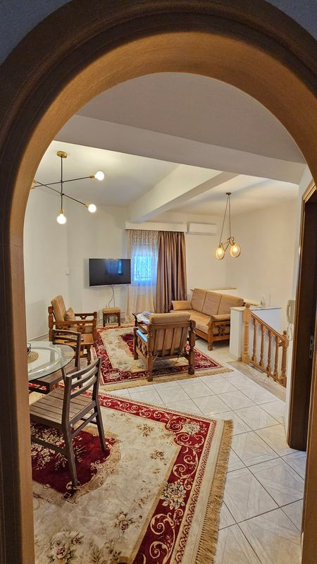

Panoramic View Apartment
Thessaloniki, next to the International Fair. A panoramic view over the whole city.
up to 6 guests · 2 bedrooms · 2 beds · 1 sofa bed · 1 bathroom · 60 m²

Choose a stay and book it on Booking.com or Airbnb, or talk to us directly by phone or email.
City apartments close to the sea and the centre.
Thessaloniki, next to the International Fair. A panoramic view over the whole city.
up to 6 guests · 2 bedrooms · 2 beds · 1 sofa bed · 1 bathroom · 60 m²
Vasilissis Olgas Ave, Thessaloniki. A modern 78 m² apartment on Vasilissis Olgas, close to the sea.
up to 6 guests · 2 bedrooms · 2 beds · 1 bathroom · 78 m²

Pylaia, Thessaloniki. A spacious 87 m² home in a quiet neighbourhood, with free parking.
up to 5 guests · 2 bedrooms · 2 beds · 1 bathroom · 87 m²

A quiet stay in Western Macedonia, among old mansions and vineyards.
Siatista, Kozani. Two bedrooms and a large private terrace.
up to 6 guests · 2 bedrooms · 2 beds · 1 sofa bed · 1 bathroom · 60 m²

Siatista, Kozani. A spacious 110 m² home, next to the square.
up to 8 guests · 3 bedrooms · 4 beds · 2 sofa beds · 1 bathroom · 110 m²
